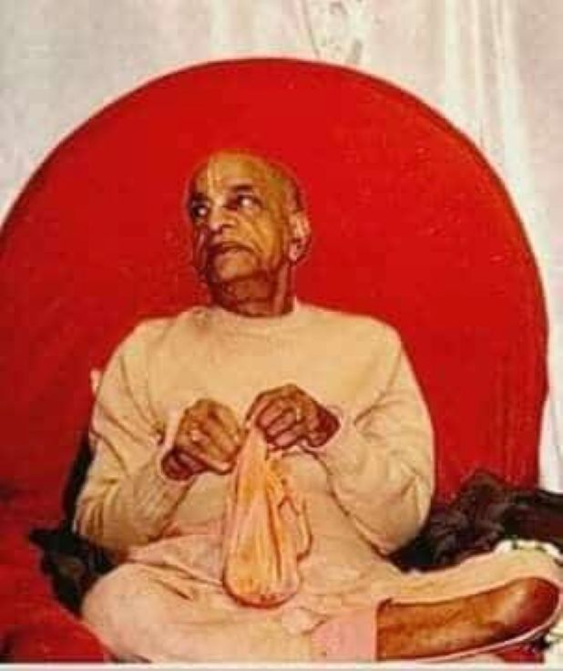

Prabhupada is like the rising sun of Sri Chaitanya Mahaprabhu.
Posted on : 4th January, 2025

In this picture, the background of Srila Prabhupad, resembles the flag of Japan 🇯🇵 which depicts the rising sun. The rising sun is all auspicious for the planet as it is vital for life on this planet .
udilo aruṇa pūraba-bhāge,
dwija-maṇi gorā amani jāge,
bhakata-samūha loiyā sāthe,
gelā nagara-brāje
"When the rising sun appeared in the East, the jewel of the twice-born, Lord Gaurasundara, awakened, and, taking His devotees with Him, He went all over the countryside towns and villages"
Prabhupada is like the rising sun of Sri Chaitanya Mahaprabhu, spreading the golden light of Krishna consciousness from the eastern shores of India to the western world.
Just as the sun rises in the east and gradually illuminates the entire world, Srila Prabhupada's love for his Guru and Gauranga have brought the message of Mahaprabhu to every corner of the globe. Srila Prabhupada has kindled a spiritual revolution that continues to inspire and transform lives.
~Admin